Unity / XR / Interactive experiences
Beyond
the screen
From games to worlds you can step into.
From mobile games to immersive worlds and real-world interactive installations. I'm a Unity and XR developer creating experiences people can step into.
Chapter 01 · 2017
The Beginning
Computer Science in Islamabad, and a curiosity about how software and digital worlds work.
Bachelor of Computer ScienceIslamabad, Pakistan · Feb 2017 – May 2021
Chapter 02 · 2020 – 2022
Building Worlds
My first Unity years: mobile games, gameplay mechanics, physics and the systems behind them.
Unity Game Developer, Spartans GlobalIslamabad, Pakistan · Dec 2020 – Apr 2022
- Mobile games: gameplay, physics, UI and performance.
- Data-driven systems with ScriptableObjects, Addressables and JSON.
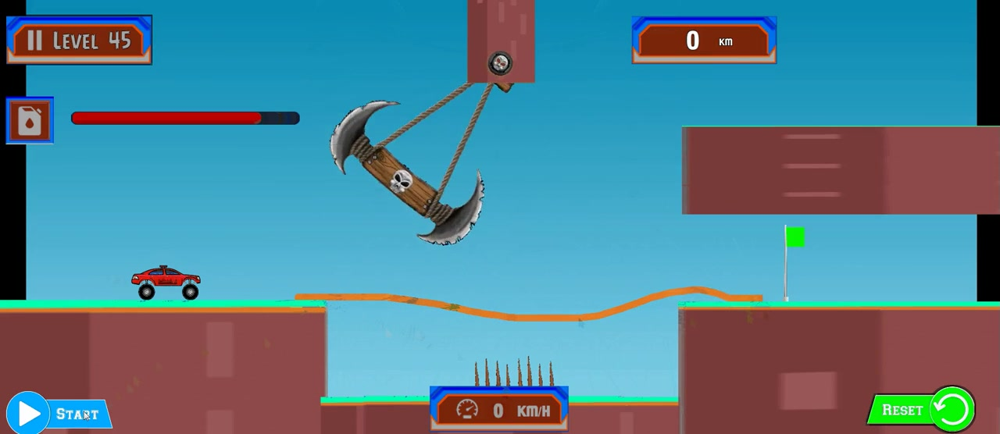
Game · 2021
Car Path Draw
Draw a path and the car follows it, getting past blades, spikes and gaps on its way to the goal.
- Type
- Mobile game
- Built with
- Unity, C#, 2D physics
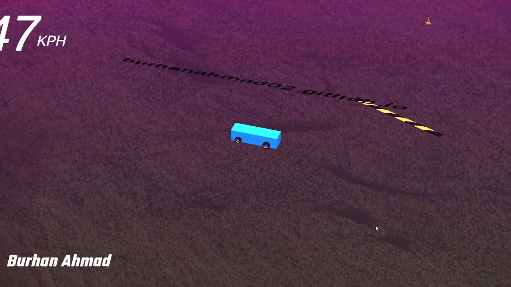
Game · 2021
Custom Car Controller
My own car controller, with drifting, tyre marks and a live speedometer.
- Type
- Vehicle physics
- Built with
- Unity, C#, vehicle physics
Chapter 02 · Moving to Dubai
GameEver Studio
A move to Dubai, and bigger games: first-person shooters and 2D titles.
Unity Game Developer, GameEver StudioDubai, UAE · Apr 2022 – Mar 2023
- FPS and 2D games: enemy AI, gameplay, UI, VFX and shaders.
- Cut 30 MB from the build through asset optimisation.
- Data-driven gameplay systems with ScriptableObjects.
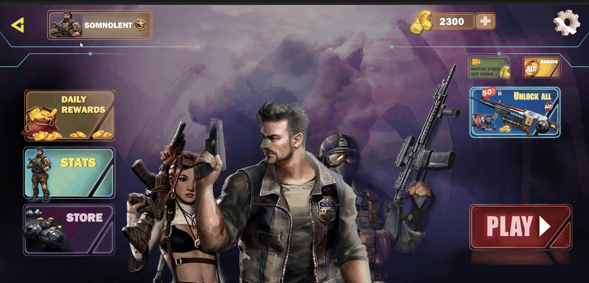
Game · 2022
FPS Sci-Fi Shooter
Full FPS controls, weapon selection and enemies that grow stronger each level, plus achievements, selectable crosshairs and a shooting range.
- Type
- Offline first-person shooter
- Built with
- Unity, C#, ScriptableObjects
Chapter 03 · 2023 – 2024
Beyond the Screen
Unity left the screen and moved into real spaces, working with cameras, tracking, sensors, LED displays and people.
Interactive Software Developer, Qubit Events ManagementDubai, UAE · Mar 2023 – now
- Installations for brands and festivals: LED floors and walls, kiosks and tracking.
- MediaPipe and YOLO models connected to Unity for real-time tracking.
- Hybrid builds with Unity WebGL, three.js, p5.js and Arduino-driven motors.
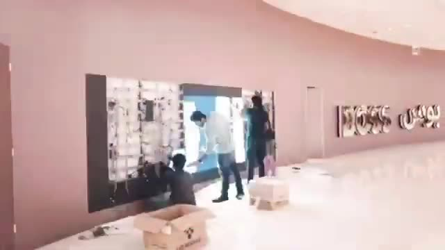
Interactive installation · 2023
Hugo Boss Interactive Shadows
With a teammate at BriteMinds I built a custom human detection model, then used its data in Unity to turn passers-by into live shadows with particles and keyframe animation.
- Client
- Hugo Boss
- Location
- Dubai Mall
- Built with
- Unity, custom detection model, particle systems
My contribution
A custom human detection model, built with a teammate at BriteMinds, and the Unity side that turns its data into real-time shadows, particles and keyframe animation.
How it works
People detection follows visitors as they walk past, and their movement drives the shadows on the installation in real time.
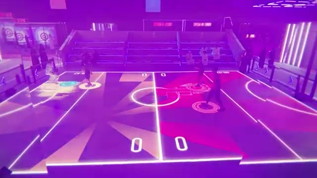
Interactive installation · 2023
Qadsiah Festival Floor
A custom air hockey game played on an interactive floor, with custom particle effects.
- Location
- Riyadh, Saudi Arabia
- Type
- Interactive floor game
- Built with
- Unity, people tracking, particle effects
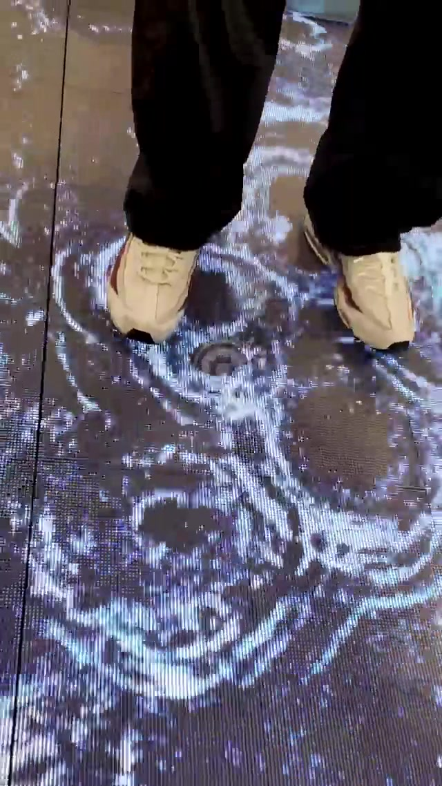
Interactive installation · 2023
Loewe Interactive Floor
Particle effects that show the nature of water, with ripples, a magnetic field and a vortex, inspired by Seph Li's ink-based art.
- Location
- Dubai Mall
- With
- Artist Seph Li
- Built with
- Unity, people tracking, particle effects
Scale
The floor handles 10 to 15 visitors at once.
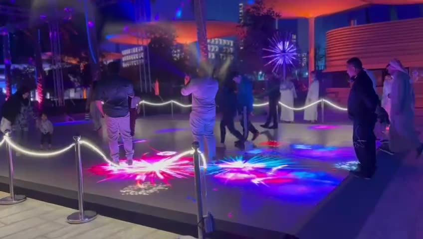
Interactive installation · 2023
Luminous Interactive Floor
For a lights festival in Qatar I made custom particle effects of fireworks in harmony, handling 10 to 15 visitors at once.
- Location
- Lusail Festival, Doha
- With
- Artist Georgie Pinn and Unity developer Nathan Clarkson
- Built with
- Unity, people tracking, particle effects
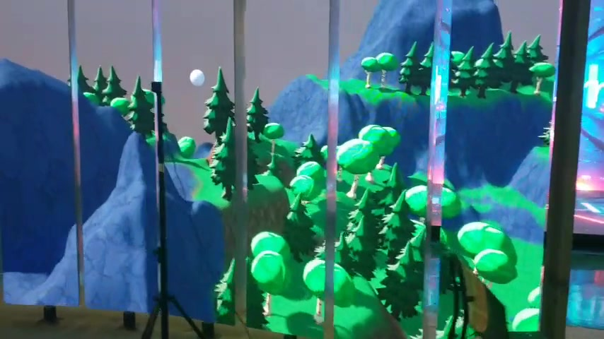
Interactive installation · 2024
Forest Room
A stylised forest rendered in real time in Unity and shown across LED panels around the room.
- Type
- Immersive LED room
- Built with
- Unity, LED wall, real-time rendering
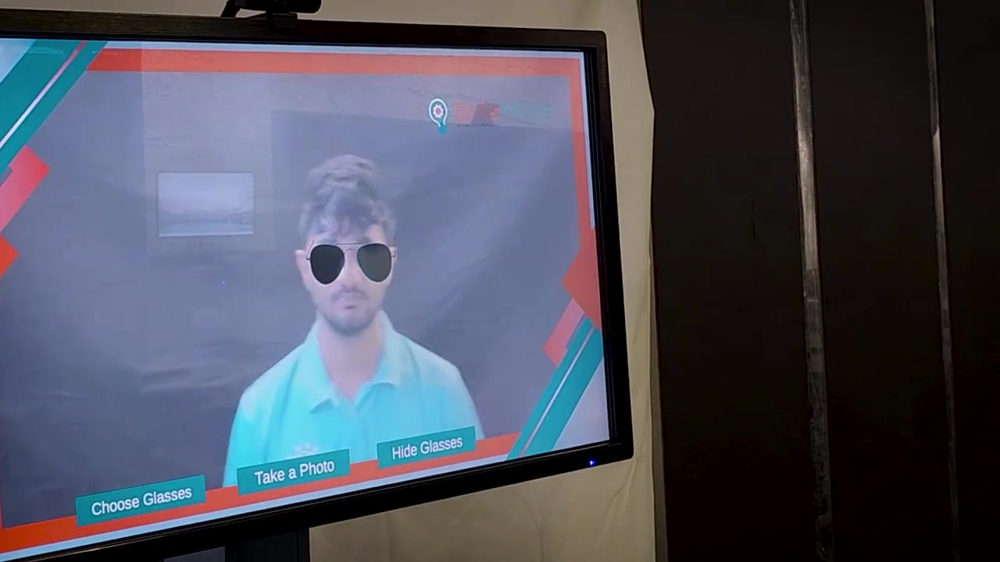
Interactive installation · 2024
AR Try-On
MediaPipe finds the eyes and nose, and the 3D glasses are sized to fit each face. Visitors take a photo, and a Node.js service turns it into an image and emails it to them.
- Type
- Face-tracking AR
- Built with
- Unity, MediaPipe, Node.js
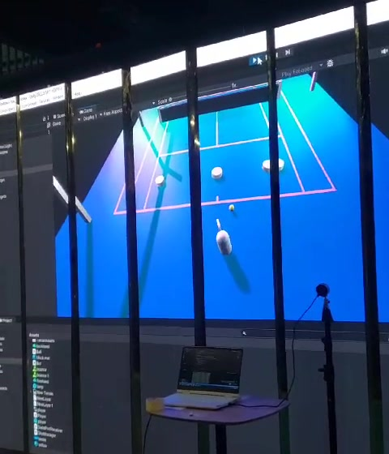
Interactive installation · 2024
Tennis with Markers
A tennis game played with a real swing. ArUco markers, a gyroscope and a depth camera track the player, and Unity turns the movement into the shot.
- Type
- Motion game
- Built with
- Unity, ArUco markers, gyroscope, depth camera
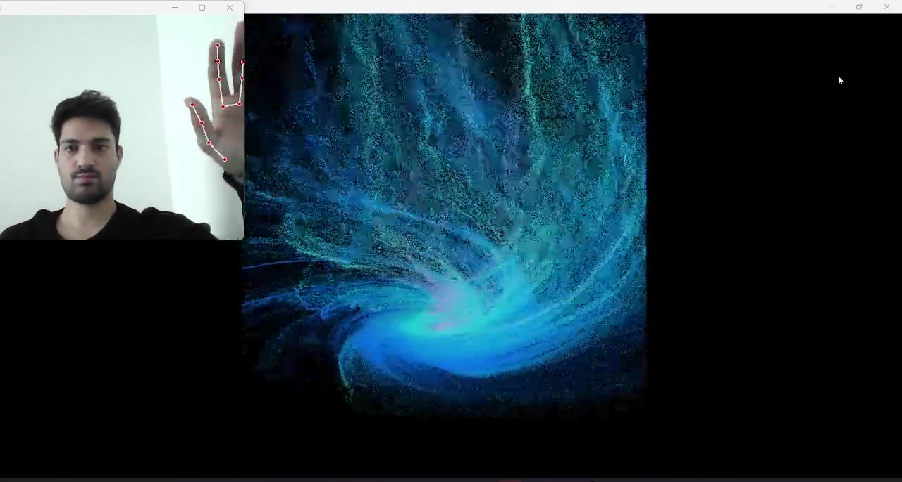
R&D · 2024
Ultra Instinct
I modified a Python cursor-control library so hand movement drives the particles. The look is inspired by Goku's Ultra Instinct in Dragon Ball Super.
- Type
- AR particle control
- Built with
- Python, Unity VFX
Chapter 04 · 2025
Blurring Realities
XR on Meta Quest and Xreal, where the digital world and the physical room start to overlap.
XR Developer, Option1 Design StudioDubai, UAE · Jul 2025 – now
- VR, MR and AR experiences for international brands.
- Sensor-driven interaction with Leap Motion and Hokuyo LiDAR.
- Networking and backends with Meta XR SDK, Photon PUN and PlayFab.
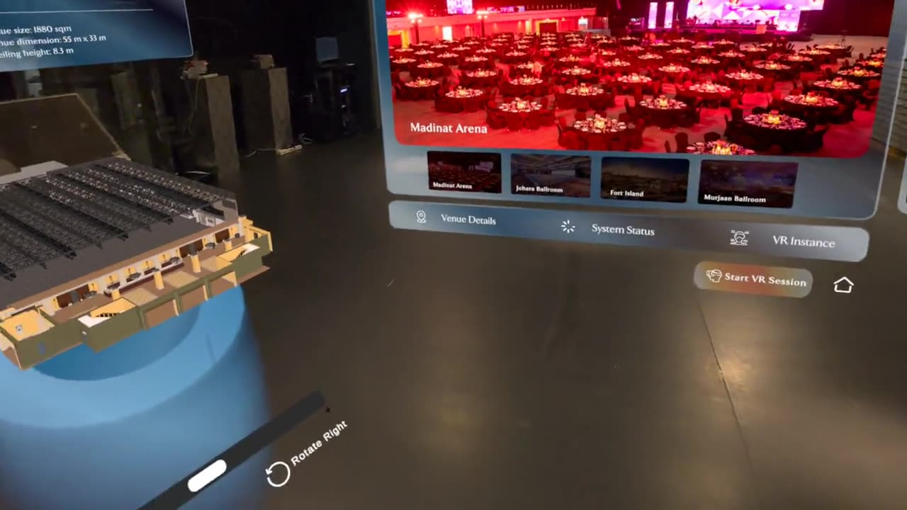
XR · 2026
Madinat Jumeirah MR
A mixed reality app for showing venues. You sign in with hand tracking, explore a 3D model of the venue and its photo and video gallery, invite guests, and then step into a full VR walkthrough of the ballroom together.
- Client
- Jumeirah Group, with Option1
- Device
- Meta Quest
- Built with
- Unity, Meta XR SDK, hand tracking, multiplayer
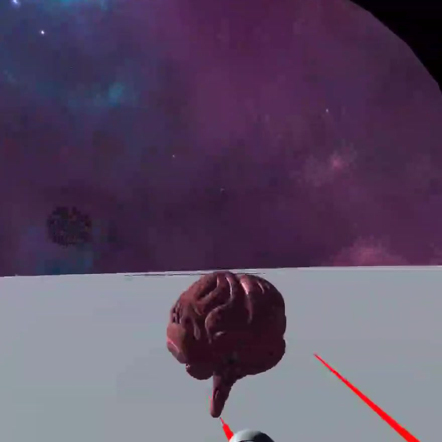
XR · 2025
VR Object Grab
Grab objects and turn them with your controller, using the 3D models from my infinite zoom project.
- Type
- VR interaction R&D
- Built with
- Unity, VR
Chapter 05 · 2026
Experiences at Scale
Complex interactive experiences that combine engineering, spatial design and real-world deployment.
XR Developer, Option1 Design StudioDubai, UAE · now
- Helped set up the studio's XR experience centre: installation, testing and debugging.
- Maintaining live Unity installations.
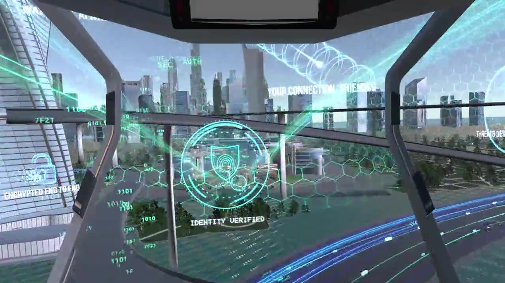
XR · 2025
Dubai Police 360 VR
A 360° VR ride for Dubai Police through a future Dubai, where your data and identity are protected, ending inside the command centre.
- Client
- Dubai Police, with Option1
- Type
- 360° VR experience
- Built with
- Unity, 360° rendering, VR
About
Same curiosity, bigger worlds
I'm Burhan, a Unity and XR developer in Dubai with nearly six years in games, installations and XR.
I started Computer Science in Islamabad in 2017, and I was building mobile games in Unity at Spartans Global before I graduated. Games taught me the habits I still rely on: tight performance budgets, data-driven systems and code that other people can build on. At GameEver Studio in Dubai I moved on to FPS and 2D games, from enemy AI to shaders.
In 2023 my work left the screen. At Qubit Events Management I build installations for brands and festivals: LED floors and walls that react to people, MediaPipe and YOLO tracking, and Arduino-driven motion. Since 2025 I've been an XR developer at Option1 Design Studio, making VR, MR and AR experiences on Meta Quest and Xreal.
The problems I enjoy most sit between the prototype and the real room: sensors that behave on site, builds that hold up in front of visitors, and experiences people understand the moment they step in.
Experience
- 2025 – nowXR DeveloperOption1 Design Studio
- 2023 – nowInteractive Software DeveloperQubit Events Management
- 2022 – 2023Unity Game DeveloperGameEver Studio
- 2020 – 2022Unity Game DeveloperSpartans Global
Tools
Unity, C#, Meta XR SDK, Photon PUN, PlayFab, OpenCV, MediaPipe, YOLO, Hokuyo LiDAR, Leap Motion, Arduino, three.js, p5.js, TouchDesigner, ComfyUI.
Contact
Let's build something people can step into.
Open to installations, XR apps and Unity work.
muhdburh@gmail.com